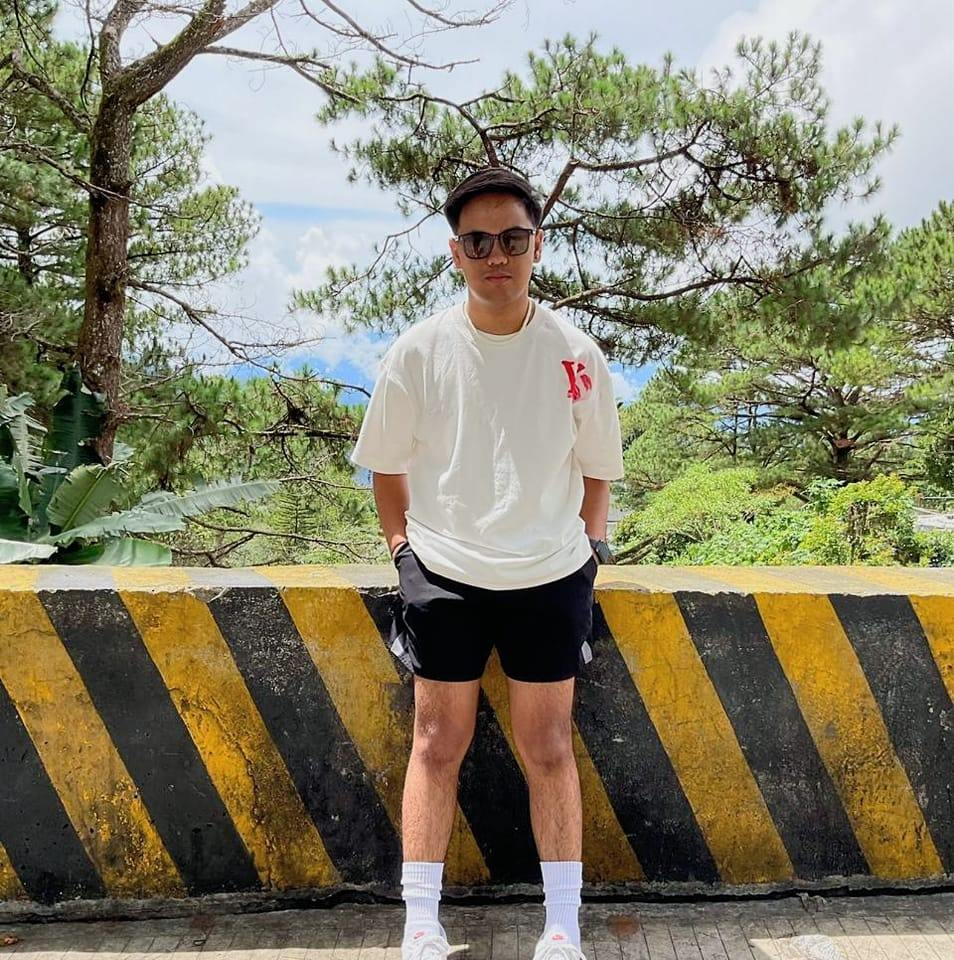
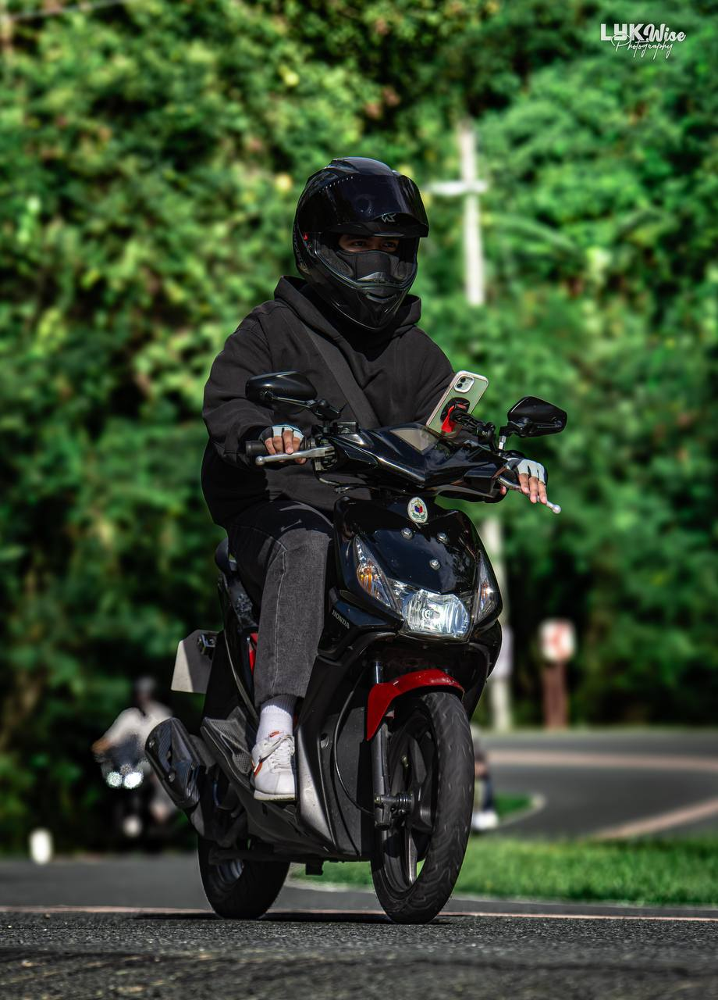
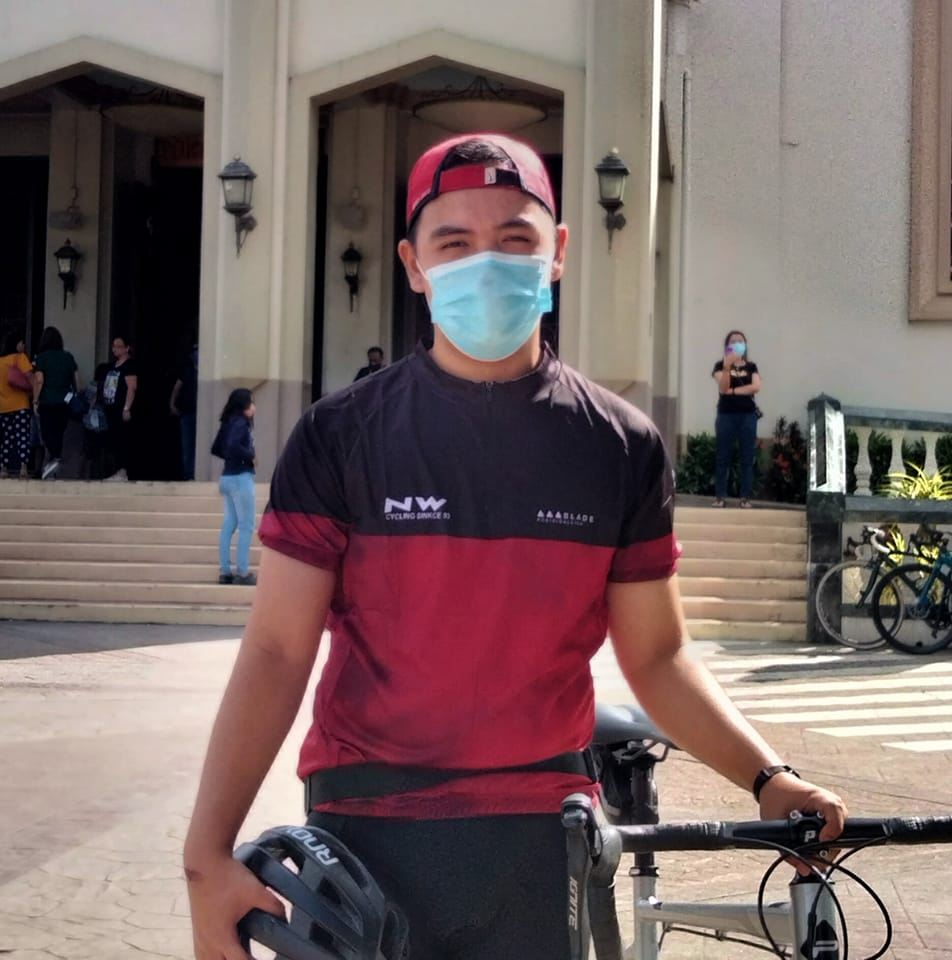

Myles at Work
Skills:

A skill that I have been hiding my whole life is that I know how to sing.1 I discovered that I can sing when it was still pandemic. 2 I started to sing while I was taking a bath, slowly I realized the basics and techniques of how to sing.3 Another skill that I am really good at is driving cars and motorcycle.4 My father taught me how to drive a motorcycle when I was 8 years old.5 Eversince that day, something in me sparked.6 I thought that my only interest was with cars but eventually I also realized how much I love motorcycles.7 Having said that, I learned to drive a car when I was 14 years old.8 Learning to drive both cars and motorcycles is a skill that I am blessed enough to have.9 I am thankful to have such privilege and I am happy that I can help my family in some ways.10 Maintaining the motorcycle I use daily is another skill that I have.11 I myself, do basic maintenance for my motorcycle and also help my relatives that are in need of basic maintenance.12 Having some knowledge of what to do incase of unexpected circumstances on the road is something that I am prepared for.13 Another hidden skill that I have is playing the guitar.14 When I am bored, I play guitar and I just try to make my own versions of the songs that I like.15 That said, being able to play the guitar brought me and my family closer as it served as our bonding.16 Another skill that I have is am somewhat an athlete.17 I have previously participated in basketball leagues and volleyball leagues.18 Also, I won the MVP for volleyball in our intramurals before while wearing vans.19 Lastly, basic trouble shooting of gadgets is something that I do.20
Hobbies:

Most of my hobbies are also my skills.1 My main hobby as of now is driving.2 I often kill time while driving a motorcycle because it brings me peace.3 Driving has been my go to hobby since I got my license because I also love travelling.4 Another hobby of mine is playing video games.5 Since I was an elementary student playing video games has been one of my hobbies to escape reality.6 Playing video games such as Valorant, Counter-Strike and League of Legends have been a huge help for me to balance my academic life and time for my self.7 Singing is also a huge part of me.8 Music is a huge part of my life and being able to sing the songs I like is huge blessing for me.9 Singing is a blessing for me as it helps me release emotions that can't be spoken.10 Another hobby of mine is watching movies and series related to the Mafia. 11 Watching such things made a huge impact in my life. 12These kind of Series and Movies is my inspiration as it shows how to live in a high profile life and how to maintain public appearances while living a wealthy life.13Don't get me wrong, I will not do illegal things just to be successful in life, I just like their lifestyle and how cool they look.14Cycling is also one of my hobbies.15Riding the bicycle has been one of my favorite hobbies because even though it doesn't have an engine, it takes me to places where I want to go.16 Cycling not only helps me travel, it also enables me to live a healthy life.17Cycling has also been my outlet when I was feeling a little down or lonely.18My hobbies may be not that much but those things are the things that help me to escape reality and find peace.19 These hobbies of mine helped me a lot when a lot of challenges came in my life and my families.20
Interests:

Because of my obsession with motor vehicles, I am interested in gaining more knowledge on how to maintain motor vehicles.1Motor vehicles has been my interest since I was a child and now that I am closer to achieving my dreams, my interest for it sparked.2Building and customizing my own car and motorcycle is one of my main goals and now that I have a few years left in college, I know that soon enough, I'll be able to do it.3Another interest of mine is learning and gaining experience for programming or improving my knowledge about technology.4These things are important for me because I know that my field of work will always be connected to technology.5These things will be a key aspect for to achieve my ambitions and goals in life and I know for a fact that technology will always be part of our lives. 6It is important for me to learn and improve on these things because I know that in the future, techonology will continue to enhance and new innovations will emerge, thus learning about it will be continous.7 Another Interest of mine that I'll always have is travelling.8 Travelling will always be my interest because I want to see what the world could offer.9Also, I often travel a lot to the Northern part of our country because my special person resides in Baguio and Isabela.10 Traveling will always be part of our lives because in the future we plan to travel the world when we can.11 Given that, my interests are working on motor vehicles, programming, and travelling, music is also part of my interests.12Music, specifically music from 90's, will always have my interest.13Some people may find it weird, but to me, it is a work of art.14 Old songs are one of my greatest interests because I love to sing it.15Singing those kind of songs give me fulfillment because when I reach the high notes, the reactions of the listeners are gold.16 Having said that, since I am a human, I find unique and authentic foods interesting.17When me and my family travelled overseas, I tried a lot of authentic foods.18For some reason, being able to eat the food that people around me doesn't usually pick to eat gives me joy because I can see their reactions.19Nevertheless, I just really want to explore and try things that I can't usually do.20